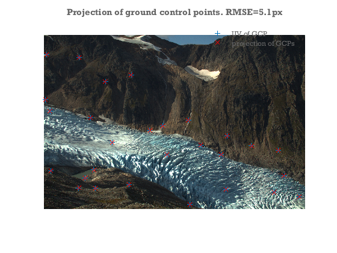
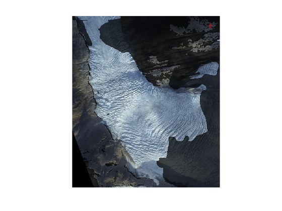
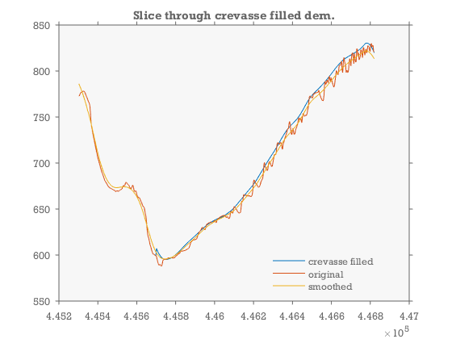
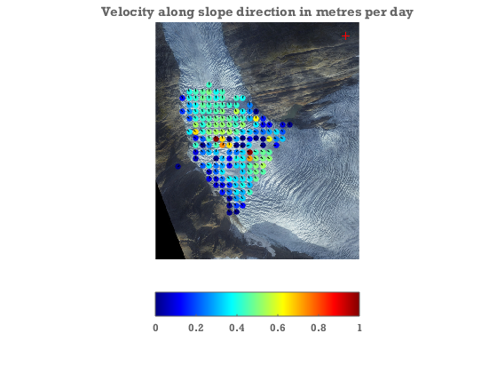

Contents
- Feature tracking example
- Setup file locations and load images & data
- Determine camera parameters for image A
- Determine view direction of camera B.
- Viewshed from camera
- Generate a set of points to be tracked between images
- Track points between images.
- Georeference tracked points
- Project velocity onto downhill slope direction
Feature tracking example
This is a complete example of feature tracking on Engabreen.
- Load images & data
- Use GCPs to determine camera view direction and lens distortion parameters of image A.
- track stable rock features to determine camera shake and infer view direction of image B
- Pre-process DEM by filling crevasses.
- Track ice motion between images
- Georeference tracked points and calculate real world velocities.
close all
Setup file locations and load images & data
idA=8902; idB=8937; % image ids (/file numbers) datafolder='demos'; fA=fullfile(datafolder,sprintf('IMG_%4.0f.jpg',idA)); fB=fullfile(datafolder,sprintf('IMG_%4.0f.jpg',idB)); %load images: A=imread(fA); B=imread(fB); metaA=imfinfo(fA);tA=datenum(metaA.DateTime,'yyyy:mm:dd HH:MM:SS'); metaB=imfinfo(fB);tB=datenum(metaB.DateTime,'yyyy:mm:dd HH:MM:SS'); dem=load(fullfile(datafolder,'dem')); %load DEM gcpA=load(fullfile(datafolder,'gcp8902.txt'));%load ground control points for image A
Determine camera parameters for image A
- Initial crude guess at camera parameters
- Use GCPs to optimize camera parameters
%calculate focal length in pixel units: FocalLength=30; %mm (can also be found here: metaA.DigitalCamera.FocalLength) SensorSize=[22.0 14.7]; %mm: http://www.cnet.com/products/canon-eos-rebel-t3/specs/ imgsz=size(A); f=imgsz([2 1]).*(FocalLength./SensorSize); %known camera location: cameralocation=[446722.0 7396671.0 770.0]; %crude estimate of look direction. camA=camera(cameralocation,size(A),[200 0 0]*pi/180,f); %loooking west %Use GCPs to optimize the following camera parameters: %view dir, focal lengths, and a simple radial distortion model [camA,rmse,aic]=camA.optimizecam(gcpA(:,1:3),gcpA(:,4:5),'00000111110010000000'); fprintf('reprojectionerror=%3.1fpx AIC:%4.0f\n',rmse,aic) %Visually compare the projection of the GCPs with the pixel coords: figure axes('position',[0 .1 1 .8]); hold on image(A) axis equal off ij hold on uv=camA.project(gcpA(:,1:3)); plot(gcpA(:,4),gcpA(:,5),'+',uv(:,1),uv(:,2),'rx') legend('UV of GCP','projection of GCPs','location','southoutside') title(sprintf('Projection of ground control points. RMSE=%.1fpx',rmse))
reprojectionerror=5.1px AIC: 155
Determine view direction of camera B.
- find movement of rock features between images A and B
- determine camera B by pertubing viewdir of camera A.
% First get an approximate estimate of the image shift using a single large % template [duoffset,dvoffset]=templatematch(A,B,3000,995,'templatewidth',261,'searchwidth',400,'supersample',0.5,'showprogress',false) % Get a whole bunch of image shift estimates using a grid of probe points. % Having multiple shift estimates will allow us to determine camera % rotation. [pu,pv]=meshgrid(200:700:4000,100:400:1000); pu=pu(:); pv=pv(:)+pu/10; [du,dv,C]=templatematch(A,B,pu,pv,'templatewidth',61,'searchwidth',81,'supersample',3,'initialdu',duoffset,'initialdv',dvoffset); % Determine camera rotation between A and B from the set of image % shifts. % find 3d coords consistent with the 2d pixel coords in points. xyz=camA.invproject([pu pv]); % the projection of xyz has to match the shifted coords in points+dxy: [camB,rmse]=camA.optimizecam(xyz,[pu+du pv+dv],'00000111000000000000'); %optimize 3 view direction angles to determine camera B. rmse %quantify the shift between A and B in terms of an delta angle. DeltaViewDirection=(camB.viewdir-camA.viewdir)*180/pi
duoffset =
13.679
dvoffset =
-1.2433
rmse =
0.40578
DeltaViewDirection =
0.12634 0.017583 0.015243
Viewshed from camera
The viewshed is all the points of the dem that are visible from the camera location. They may not be in the field of view of the lens.
dem.visible=voxelviewshed(dem.X,dem.Y,dem.filled,camA.xyz); % show the viewshed by shading the dem.rgb image. figure title('Viewshed of DEM (i.e. potentially visible from camera location)') image(dem.x,dem.y,bsxfun(@times,double(dem.rgb)/255,(0.3+0.7*dem.visible))) axis equal xy off hold on plot(camA.xyz(1),camA.xyz(2),'r+')
Generate a set of points to be tracked between images
- Generate a regular grid of candidate points in world coordinates.
- Cull the set of candidate points to those that are visible and glaciated
[X,Y]=meshgrid(min(dem.x):50:max(dem.x),min(dem.y):50:max(dem.y));%make a 50m grid keepers=double(dem.visible&dem.mask); %visible & glaciated dem points keepers=filter2(ones(11)/(11^2),keepers); %throw away points close to the edge of visibility keepers=interp2(dem.X,dem.Y,keepers,X(:),Y(:))>.99; %which candidate points fullfill the criteria. xyzA=[X(keepers) Y(keepers) interp2(dem.X,dem.Y,dem.filled,X(keepers),Y(keepers))]; [uvA,~,inframe]=camA.project(xyzA); %where would the candidate points be in image A xyzA=xyzA(inframe,:); %cull points outside the camera field of view. uvA=uvA(inframe,:); %round because template match only works with integer pixel coords uvA(end+1,:)=[2275 1342]; %add a non-glaciated point to test for residual camera movement (here a tunnel entrance) %Note xyzA no longer corresponds exactly to uvA because of the rounding.
Track points between images.
% calculate where points would be in image B if no ice motion. % ( i.e. accounting only for camera shake) camshake=camB.project(camA.invproject(uvA))-uvA; options=[]; options.pu=uvA(:,1); options.pv=uvA(:,2); options.showprogress=[idA idB]; options.searchwidth=81; options.templatewidth=21; options.supersample=5; %supersample the input images options.initialdu=camshake(:,1); options.initialdv=camshake(:,2); [du,dv,C,Cnoise,pu,pv]=templatematch(A,B,options); uvA=[pu pv]; %the centers of the templates may have been rounded to nearest pixel. uvB=uvA+[du dv]; signal2noise=C./Cnoise;
Georeference tracked points
... and calculate velocities
xyzA=camA.invproject(uvA,dem.X,dem.Y,dem.filled); % has to be recalculated because uvA has been rounded. xyzB=camB.invproject(uvB,dem.X,dem.Y,dem.filled-dem.mask*22.75*(tB-tA)/365); % impose a thinning of the DEM of 23m/yr between images. V=(xyzB-xyzA)./(tB-tA); % 3d velocity. figure; showimg(dem.x,dem.y,dem.rgb); hold on Vn=sqrt(sum(V(:,1:2).^2,2)); keep=signal2noise>2&C>.7; scatter(xyzA(keep,1),xyzA(keep,2),100,Vn(keep),'.') quiver(xyzA(keep,1),xyzA(keep,2),V(keep,1)./Vn(keep),V(keep,2)./Vn(keep),.2,'k') caxis([0 1]) colormap jet hcb=colorbar('southoutside'); plot(camA.xyz(1),camA.xyz(2),'r+') title('Velocity in metres per day')
Project velocity onto downhill slope direction
---- The largest error in the velocities will along the view direction vector. By projecting to the slope direction we strongly suppress errors arising from this.
[gradX,gradY]=gradient(dem.filled,dem.X(2,2)-dem.X(1,1),dem.Y(2,2)-dem.Y(1,1)); gradN=sqrt(gradX.^2+gradY.^2); gradX=-gradX./gradN;gradY=-gradY./gradN; gradX=interp2(dem.X,dem.Y,gradX,xyzA(:,1),xyzA(:,2)); gradY=interp2(dem.X,dem.Y,gradY,xyzA(:,1),xyzA(:,2)); Vgn=V(:,1).*gradX+V(:,2).*gradY; Vg=[Vgn.*gradX Vgn.*gradY]; close all figure showimg(dem.x,dem.y,dem.rgb); axis equal xy off tight hold on scatter(xyzA(keep,1),xyzA(keep,2),300,Vgn(keep),'.') quiver(xyzA(keep,1),xyzA(keep,2),Vg(keep,1)./Vgn(keep),Vg(keep,2)./Vgn(keep),.2,'k') caxis([0 1]) colormap jet hcb=colorbar('southoutside'); plot(camA.xyz(1),camA.xyz(2),'r+') title('Velocity along slope direction in metres per day')